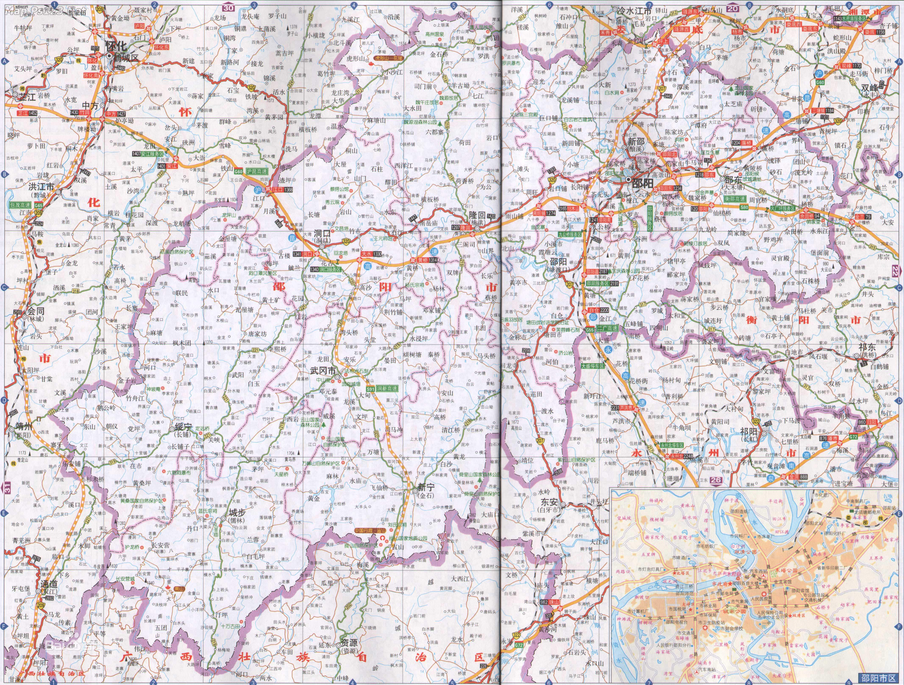

截至2016年底，邵阳市拥有民用车辆75.49万辆，比2015年下降2.0%，其中汽车41.33万辆，增长16.7%，轿车17.68万辆，增长19.9%。公路水路完成货运量2.29亿吨，比2015年下降3.3 %，货物周转量460.43亿吨千米，增长1.9%；客运量1.28亿人，下降4.3%，旅客周转量53.35亿人千米，下降11.9%.
明清之际，宝庆府城依资江黄金水道和数条驿道而成为水陆要冲， 邵阳市 交通图 湘中重镇；民国时期，湘黔公路干线贯穿境内，邵阳县城成为东南与西南商品物资转运枢纽。而今，娄邵铁路连接湘黔铁路干线，经娄底、株洲、长沙而达全国各地。公路有320国道横贯东西，207国道纵连南北，省道、县道、乡道及专用公路在境内经纬交织，通车里程达5839千米。
2015年，怀邵衡铁路开工建设，娄邵铁路扩改竣工并开行高铁，沪昆高铁邵阳段通车。洞新、怀通、娄新、邵坪4条高速公路相继通车，安邵、武靖高速公路加快建设，实现“县县通高速”。年末全市公路通车里程为22005.64千米，增长0.6%，其中等级公路17508.44千 米，增长1.1%，高速公路508千米，增长20.2%。
2016年，沪昆高铁通车，娄邵铁路扩改竣工并开行动车，怀邵衡铁路进展较快。洞新、怀通、邵坪、安邵、娄新、衡邵高速相继通车，武靖高速邵阳段即将通车，崀山（白新）高速、呼北高速完成前期工作。年末全市公路通车里程为2.2万千米，与2015年持平，其中等级公路1.75万千米，高速公路508千米，与2015年持平。
